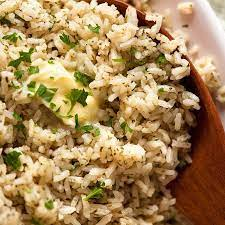
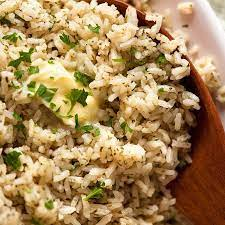

Seasoned Rice
Rice Side Dish for everything! Don’t get me wrong, plain rice has its place in this world. Doused with saucy stir fries, smothered in spicy curries. But you do need a sauce. So how do you make plain white rice so tasty, you will want to eat a meals’ worth straight out of the pot?? Cook it with stock powder/bouillon, some spices and add a good wack of butter!
Flavourings and spices for seasoned rice Here’s what goes in this seasoned rice. You can make this with any white rice other than speciality rices. Don’t worry if you don’t have all the spices, there are plenty of alternatives! Spices for rice to make it taste better
SUBSTITUTION FOR SPICES, You could skip one of the spices and it will still taste similar. Or you can substitute as follows:
Garlic powder – melt 1 tbsp (15g) butter and cook 2 finely chopped garlic cloves until golden, then add rice, water and all other ingredients and cook per recipe;
Onion powder – add extra 1/2 tsp garlic powder instead;
Paprika – just skip it, adds a touch of warm earthy flavour and a bit of colour, not critical;
Thyme – not critical. Best sub is dried oregano, followed by basil. 1/4 tsp sage powder is SO GOOD as well.
Parsley – optional, this is more for visual, to get the little green specks in the rice. Sub with basil, or stir through 1 cup finely sliced green onion, or 1/2 cup finely chopped fresh parsley or chives.
How to make seasoned rice
1. Place rice, water and all the seasonings into a large saucepan or small pot and give it a good stir;
2. Bring to a simmer over medium high heat until there’s bubbles around the edges and the entire surface is rippling, and it foams a bit (you’ll see in the video);
3. Place a tight fitting lid on, then turn down to medium low – or low for strong stoves. You want the water to still be simmering – if the heat is too low, then the rice just sits there in hot water, bloating, rather than absorbing. Too high, and it will bubble over and out the sides of the pot. NO PEEKING – the lid needs to stay on to trap the steam inside – this will ensure your rice cooks evenly;
After 13 minutes, remove from the stove and let it rest for 10 minutes – the rice will finish cooking during this time (if you try the rice as soon as it comes off the stove, you’ll find the surface of the grain is wet and the inside is still uncooked);
Add butter and fluff up the rice with a rubber spatula – the residual heat will melt the butter. I recommend using at least 3 tbsp (50g) for a lovely buttery rice, but you can reduce to 2 tbsp (30g) if you want. Or sub with extra virgin olive oil, or just skip the butter – it will still be very tasty rice!
Pile onto serving platter, sprinkle with parsley or something green for presentation if you wish. Dig in!